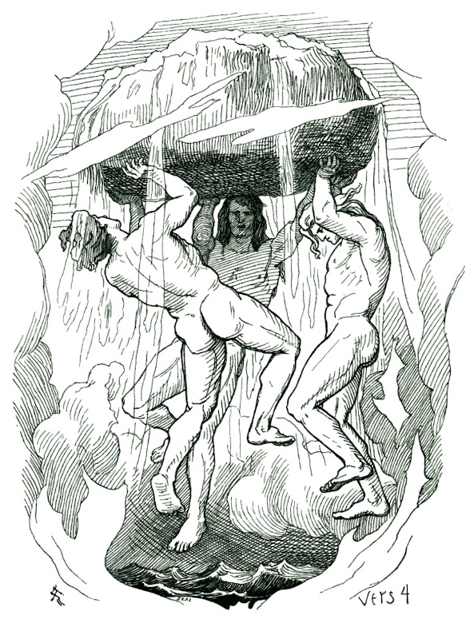
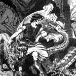
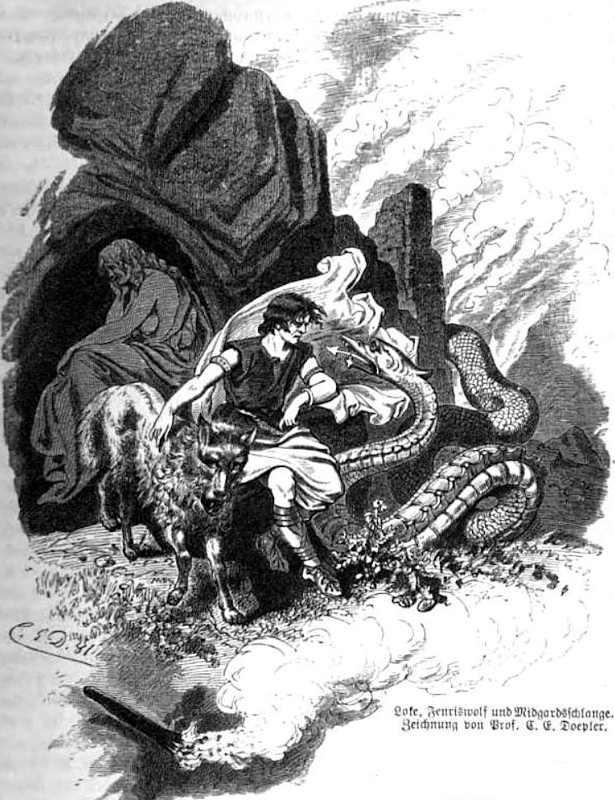

Welcome to Readings from Miðgarð!
In This Website
Here, you will find information on the places, people, and events that make up Norse mythology and additional resources to do your own research. If Norse mythology interests you and you would like to learn more, then this is the place for you!
What is Norse Mythology?
Norse mythology is the term we use for the stories constructed by the Norse people to be the foundation of their religion. While the stories were traditionally told orally, a few tales were written down many years after the Norse people were christianized, giving us a faded, but wonderful view into what the religion was like. These tales of gods and giants, fire and ice, and beginnings and ends may often seem strange and outlandish to modern readers, but they were nonetheless the foundation for a world view held by thousands of people for hundreds of years.
Modern Impact
Norse mythology has become increasingly popular in media over the past few decades, and its effects can be seen all over the place. Most people know of Norse mythology from Marvel's Thor. Another major piece of pop culture with origins in Norse mythology is elves and dwarves, or álfr and dvergr. While J. R. R. Tolkien's The Hobbit and The Lord of the Rings may have made them popular in modern times, he based the races in his books very closely on their Norse counterparts. Even dragons have their roots in Norse mythology. Fafnir was a dwarf who turned into a dragon through the strength of his own greed toward a cursed pile of gold. If it wasn't for his story, it's unlikely we would see dragons as the greedy treasure hoarders we know today. Looking past pop culture, we can take a look at our own calendar. Two of our days of the week are actually named after Norse gods. Thursday is short for Thor's Day and Wednesday is short for Woden's Day. (Wodin is another name for Odin.)
Knowledge of Norse Mythology
Clearly modern stories have brought Norse mythology onto the radar of many people, but how much do they actually know about it? Unfortunately, the answer is usually "not much." While many
people could tell you about Zeus, Hercules, Hades, and Medusa from Greek mythology, few people know anything about the Norse myths past the scattered references to Ragnarok as the end of
the world or Thor as the cool lightning guy with a hammer. This truly is a shame, as the Norse myths are some of the most unique and interesting stories out there.
Unfortunately, many of the old stories have been lost to time, as they were never put down on paper, and many others have likely been altered by the passage of time between their creation
and their writing and by the Christian beliefs which influenced the version of the tales we have. Still, with the sources we have, we can see a clear image of what the world was like from
the eyes of the Vikings.
So what are you waiting for? Just click one of the navigation links above or the interactive images below to get started. The epic triumphs of Thor, the mighty presence of the world tree Yggdrasil, and the cryptic creation of the cosmos awaits!
Navigation Gallery
Hover over an image to see an enlarged version. Clicking on the thumbnail will take you to the article if one has been made.
- Locations
- Events
-
 Yggdrasil
Yggdrasil
Friedrich Wilhelm Heine, Public domain, via Wikimedia Commons -
 Midgard
Midgard
Oluf Bagge, Public domain, via Wikimedia Commons -
Creation

Lorenz Frølich, Public domain, via Wikimedia Commons -
Ragnarok

Friedrich Wilhelm Heine (1845-1921)., Public domain, via Wikimedia Commons - Gods and Giants
-
Odin

Georg von Rosen, Public domain, via Wikimedia Commons -
Thor
Max Koch, Public domain, via Wikimedia Commons -

Loki

Carl Emil Doepler (1824-1905), Public domain, via Wikimedia Commons -
Fenrir

Mabel Dorothy Hardy, Public domain, via Wikimedia Commons - Future Articles
-
Asgard
Lorenz Frølich, Public domain, via Wikimedia Commons -
Hel
John Charles Dollman, Public domain, via Wikimedia Commons -
Baldr
Christoffer Wilhelm Eckersberg, Public domain, via Wikimedia Commons -
Heimdall
Emil Doepler, Public domain, via Wikimedia Commons -
Freya

Eduard Ade, Public domain, via Wikimedia Commons -
Magni

Ludwig Pietsch (1824-1911), Public domain, via Wikimedia Commons -
Jormungandr
Signed "H. L. M.", Public domain, via Wikimedia Commons -
Ymir
Lorenz Frølich, Public domain, via Wikimedia Commons
{kind=link}
{kind=link}
{kind=link}
{kind=link}
{kind=link}